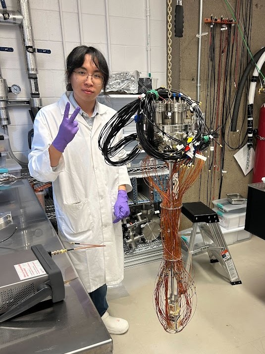

Welcome
My Computer
Network Neighborhood
Internet Explorer
Notepad
Recycle Bin
Here you will find what he has been (secretly) doing recently.
Xiang (Alex) Li (any pronouns) is a PhD student at the Simon Fraser University, and research assistant at TRIUMF. He works with the nEXO collaboration on the Light-only Liquid Xenon (LoLX) R&D project. His research centers on characterizing the performance of Silicon Photomultipliers (SiPMs) and investigating scintillation and light production in liquid xenon, which are important for studying neutrinoless double beta decay and for detector technology using liquid xenon and SiPMs.
The website is still under construction. Check out the "Internet Explorer" on the desktop to see his latest research and publications!
This site is inspired by and credits 98.js.